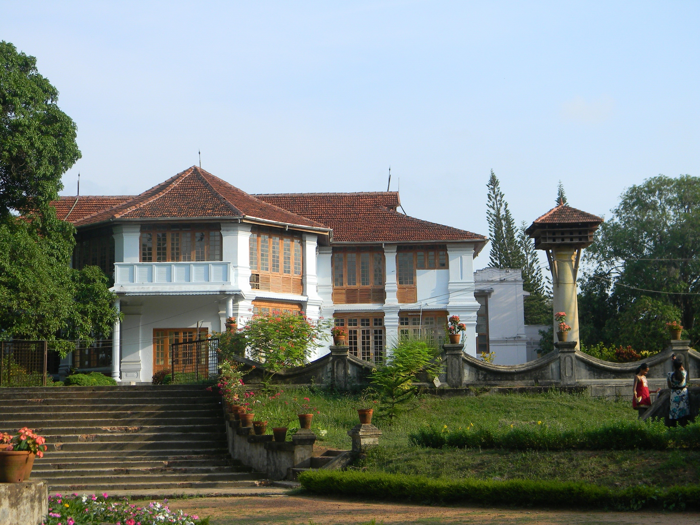

It is situated in the central part of the state, spans an area of about 3,000 square kilometres. Its headquarters are located at Kakkanad. The district includes Kochi, also known as the IT and commercial capital of Kerala, which is famous for its ancient Hindu temples, churches, and mosques. The district includes the largest metropolitan region of the state: Greater Cochin. Ernakulam is the district that yields the most revenue and the largest number of industries in the state. It contributes to around 60% of the annual state revenue..
How to Reach
The three major national highways passing through Ernakulam are the Cochin-Mumbai Highway (NH 66), Salem-Kanyakumari (NH 47 part of NSEW corridor), and Cochin-Dhanushkodi highway (NH 49). Ernakulam has 17 railway stations. The Ernakulam Junction, Ernakulam Town and Aluva are the major stations. Ernakulam district has two airports: Naval airport in W.island (Old Cochin airport) and Cochin International Airport (CIAL). CIAL is the fourth largest airport in the country after Mumbai, Delhi, and Chennai, and serves International passengers. Ernakulam lies in the flat delta region of the Periyar and Moovattupuzha rivers. Water transport is prominent in the district via rivers and lagoons.
Places to Visit
Hill Palace
Hill Palace is the largest archeological museum in the state and was the imperial administrative office and official residence of the Cochin Maharaja.
Saint Francis Church
Saint Francis Church, in Fort Kochi, Kochi, originally built in 1503, is one of the oldest European churches in India and has great historical significance as a mute witness to the European colonial struggle in the subcontinent.
Dutch Palace
Dutch Palace is constructed by the Portuguese in 1568 as a gift to Maharaja of Kochi, Veera Kerala Varma, after he granted permission to construct Fort Immanunel. During the Dutch siege of Kochi, many parts of the original palace were destroyed

Hill Palace
Hill Palace is the largest archeological museum in the state and was the imperial administrative office and official residence of the Cochin Maharaja.
Saint Francis Church
Saint Francis Church, in Fort Kochi, Kochi, originally built in 1503, is one of the oldest European churches in India and has great historical significance as a mute witness to the European colonial struggle in the subcontinent.
Dutch Palace
Dutch Palace is constructed by the Portuguese in 1568 as a gift to Maharaja of Kochi, Veera Kerala Varma, after he granted permission to construct Fort Immanunel. During the Dutch siege of Kochi, many parts of the original palace were destroyed